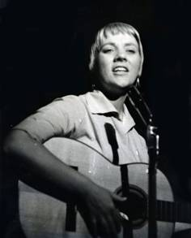
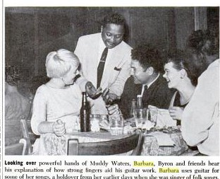

|
Барбара Дейн (Barbara Dane), американская блюзовая, джазовая и фолк-певица, родилась 12 мая 1927 года в Детройте. Едва закончив школу, она увлеклась политикой и начала регулярно выступать на демонстрациях против расового и экономического неравенства, а также сотрудничать с самыми разными коллективами города. В 1949-м она переезжает в Сан-Франциско, где занимается воспитанием детей и попутно исполняет народные песни и песни протеста в клубах, на радио и телевидении. В это время происходит резкий всплеск интереса к джазу, и женские блюзы и ранние джазовые мелодии в исполнении Барбары завоевывают немалую популярность в местных клубах; её регулярно приглашают выступить местные и даже новоорлеанские коллективы.  В 1956 году она получает свой первый профессиональный ангажемент в клубе «Tin Angel». Журнал «Ebony» публикует о ней большую статью с фотографиями, на которых Барбара Дейн поёт вместе с Мадди Уотерсом, Мемфис Слимом, Вилли Диксоном и другими звёздами: «Выглядит потрясающе, когда эта блондинка вдруг запевает своим низким вибрирующим альтом о несчастьях, неверных мужьях и свободе... В ней чувствуются энтузиазм, несгибаемое упорство и огромное сочувствие к угнетённым». Музыкальные пристрастия Барбара поровну делит между фолк-музыкой и традиционным джазом. В 1957 году на подъёме движения джаз-ревайвалистов она записывает дебютный альбом в компании джазовых музыкантов. 7 января 1959 года по приглашению Луи Армстронга Барбара участвует вместе с ним в телешоу «Timex All-star Jazz Show». «Вы видели эту цыпочку?» — спрашивал Армстронг у читателей журнала «Тайм». — «Она сногсшибательна!»  Вскоре она едет в турне по Восточному побережью вместе с Джеком Тигарденом, выступает в Чикаго с Рузвельтом Сайксом, Отисом Спенном, Вилли Диксоном и Мемфис Слимом, в Нью-Йорке — с Уилбуром де Пари и его бэндом, а также во множестве телешоу. 3 и 4 июня 1959 г. записала альбом традиционного джаз-блюза с оркестром джазового пианиста Ирла Хайнза. А в ноябре стала первой белой героиней статьи журнала «Ebony», посвящённого исключительно «чёрной» культуре. Статью сопровождают замечательные фотографии, на которых она выступает на одной клубной сцене с Вилли Диксоном, Отисом Спэном, Литл-Бразер Монтгомери, Мамой Янси, а Мадди Уотерс демонстрирует ей свой слайд. Почитать на английском и посмотреть фотографии можно здесь >>>.В 1961 году певица открывает в Сан-Франциско свой собственный клуб, «Sugar Hill: Home Of The Blues». Идея сделать блюзовый клуб в туристическом районе для привлечения более широкой публики оказалась удачной. Сама Барбара Дейн регулярно выступает в нём в сопровождении своих любимых музыкантов: пианиста и трубача Кенни «Гуд Ньюс» Уитсона и Уэллмана Брода, бывшего контрабасиста Дюка Эллингтона. Как и многие другие участники музыкального фолк-движения, Барбара Дейн была увлечена борьбой за гражданские права, антивоенными выступлениями, принимала участие в митингах за прекращение войны во Вьет-Наме. Она пела в школах Юга Миссиссиппи, где реформа по совместному обучению «белых» и «цветных» детей натыкалась на яростное сопротивление расистов. Она пела антивоенные песни перед воротами военных баз в США, в Европе, в Японии. В 1966 году она стала первым американским музыкантом, приехавшим на гастроли и принявшим участие в музыкальном фестивале на коммунистической Кубе. В 1970 году Барбара Дейн основала лейбл Paredon Records для записи и выпуска пластинок артистов, принимающих, как и она, участие в освободительном движении. За 12 лет существования лейбла было выпущено 45 пластинок (из которых три она записала сама). В настоящий момент каталог Paredon Records приобрёл авторитетный Smithsonian-Folkways. «Я была слишком упрямой, чтобы взять себе одного из этих жадных менеджеров, может быть потому, что я привыкла говорить сама за себя. Так что я всегда сама заключала свои контракты и решала, где, когда и с кем работать. У меня хватало времени на троих детей и политическую работу, и в итоге я приносила домой больше денег, чем если бы я связалась с шоу-бизнесом. Мне удалось сделать по-настоящему хорошие записи, потому что я имела возможность выбирать и сотрудничала только с самыми талантливыми музыкантами». «Почему блюзы? Потому что они обращаются от самого сердца к сердцу другого, — поясняла Барбара. — Блюзы родились из наихудших условий жизни, к каким только может принудить один человек другого: из рабства и эксплуатации. А миру они предстали как обращение безумия в здравый смысл, боли — в радость, цепей — в свободу и вражды — в единство. Это музыка тех, кто выжил, и этому у блюзов надо учиться, понимать их суть и знакомить с блюзами настолько больше людей, насколько это только возможно. И не важно, что говорится в словах песни, не важно, кому я её пою, — я всегда пою именно об этом». перевод и изложение © Тамара Зарицкая Именной сайт
Барбары Дейн сообщает, что единственным чисто фольковым альбомом в её дискографии является
«When I Was a Young Girl», записанный в 1961 г. в дуэте с Томом Пэли (гитара,
банджо) и переизданный в 1997 году под названием «Антология Американских народных
песен». |